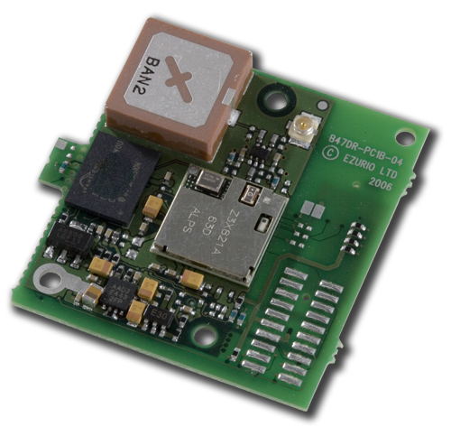

Microcontrollers! Something that while it may not be obvious, is common everywhere around us. But what is a microcontroller? A microcontroller is basically the smallest form that a personal computer can come in, small enough to fit in your TV remote and other items around your house. Unlike the computers you may be reading this on, a microcontroller is generally commited to a single task instead of many, and they do that one task well.
Microcontrollers are most often used in something called an "embedded system". An embedded system is a piece of technology that is made up of both hardware and software components. It is a term used for a computer (in this case microcontroller) that is a part of, or "embedded" within something that is not a computer itself, forming a system. Embedded systems include many home appliances and other electronics people use daily.
